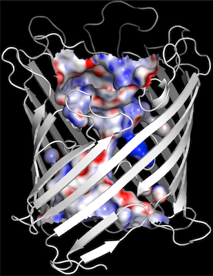
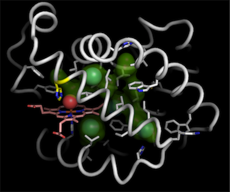
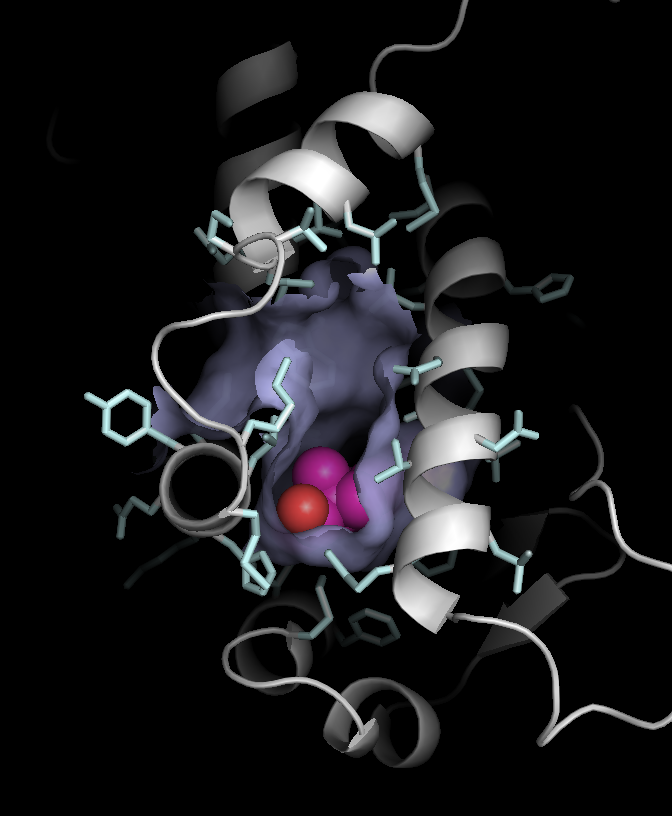
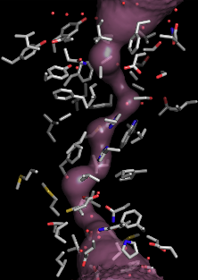
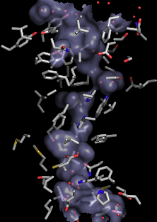

| instructions | ||
|
 1. channel surfaces (and electrostatic surfaces) |
 2. interior pathway surfaces 3. for WINDOWS in the IDLE interpreter |
 4. ligand-binding surfaces |
Version 1.3 (May 2020). Python 3/2 compatible.
Version 1.2 (Aug 2011). Changed exceptions to work with Python 2.7 (thanks Joshua Adelman)
Version 1.1 (Feb 2009). Faster initialization of grid. Works in the IDLE Python interpreter.
HOLLOW is a portable command-line utility written in Python 2.7/3.6+; it does not have any other dependencies (although running under the PyPy JIT interpreter, it runs much faster).
The input is a PDB file.
The output is a PDB file of dummy water atoms that forms a "cast" of the voids and channels of a protein.
In PyMol, for instance, displaying the surface of these dummy atoms provides an accurate and clean representation of the interior surface of the protein.
Every parameter is adjustable as they are stored in text-based configuration files. These include the grid-spacing, probe sizes and atomic radii. The default atomic radii are take from the PYMOL package.
Ever have trouble generating clean surfaces of voids or channels in a protein viewer? Although molecular graphics viewers can produce sophisticated renderings of protein surfaces, it is really difficult to display only the piece of surface that you want, without random pieces of extraneous surfaces.
The problem is that in most graphic viewers, surfaces are generated on a per atom basis. Many atoms are involved in more that one piece of surface, where an atom might line a channel surface and also form part of a void. Both surfaces are always displayed in relation to that atom. It is impossible to remove one but not the other.
To solve this problem, HOLLOW generates a surface from a "cast" of the protein surface. HOLLOW fills the interior spaces of a protein structure with dummy atoms defined on an overlapping grid. The surface generated by these dummy atoms can be shown to reproduce the surface of the protein at the ideal limit.
The use of the surface of the dummy atoms allows us to focus on a specific piece of the interior surface. Simply by deleting dummy atoms, the interior surface can be trimmed to produce a custom portion of the interior space.
The custom portion of the space can be used to generate interior surfaces such as this channel surface of the ammonia channel. For advanced coloring of the surface, the B-factor of the dummy atoms can be calculated as the average of the B-factor of the protein atoms surrounding the dummy atoms. This allows various colorings of the surface to be conveyed through the B-factor field of the PDB files.
The volume filling representation facilitated by HOLLOW is meant to complement other programs that identify voids, pockets and channels, such as SPHGEN and CASTp, which identify binding sites but cannot produce output that can be rendered in standard molecular graphics software. HOLLOW can be used to help render these binding pockets.
Programs such as MOLE, CAVER and HOLE, generates low-resolution surfaces of channels in a protein.
|
MOLE surface  |
HOLLOW surface  |
SURFNET generates low-resolution surfaces of binding pockets. Given these surfaces as a starting point, HOLLOW can be used to display hi-resolution equivalents of these surfaces.
HOLLOW: Generating Accurate Representations of Channel and Interior Surfaces in Molecular Structures Bosco K. Ho and Franz Gruswitz. BMC Structural Biology (2008) 8:49. [link, pdf]
If you have questions or bug reports, email:
boscoh@gmail.com.